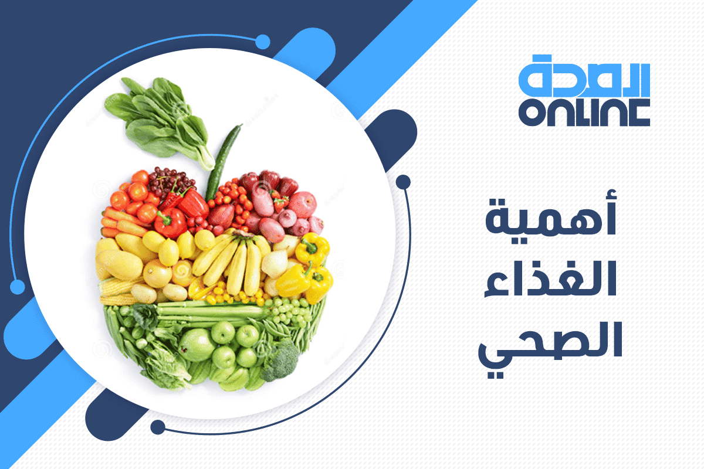
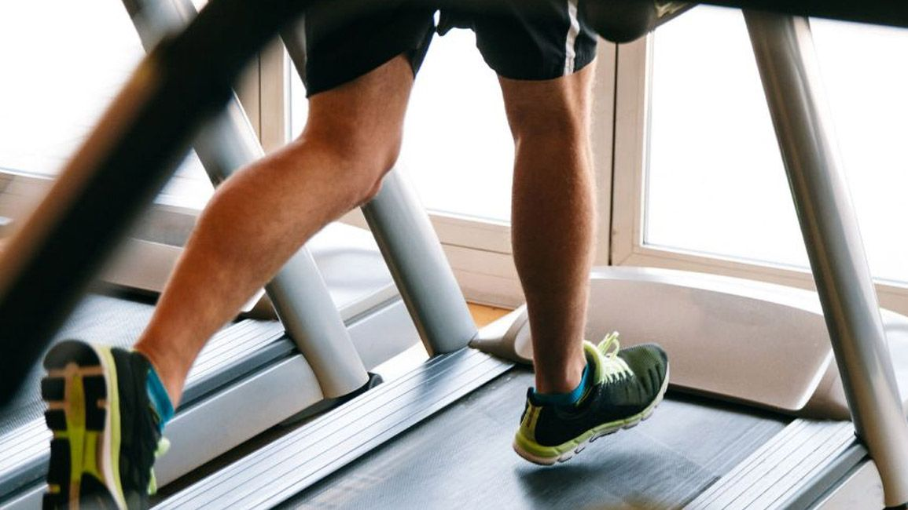
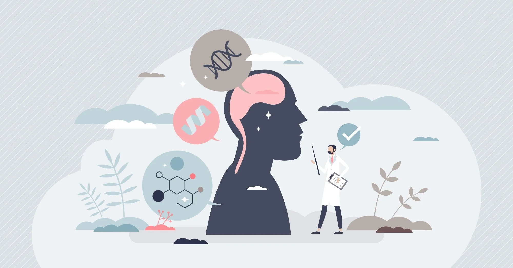

أهمية الغذاء الصحي
تناول الغذاء الصحي يساعد في تعزيز المناعة والحفاظ على صحة الجسم بشكل عام.

تناول الغذاء الصحي يساعد في تعزيز المناعة والحفاظ على صحة الجسم بشكل عام.

ممارسة التمارين الرياضية بانتظام تساهم في تحسين الصحة النفسية والجسدية.

الاهتمام بالصحة النفسية يعد جزءاً أساسياً من حياة صحية متوازنة.